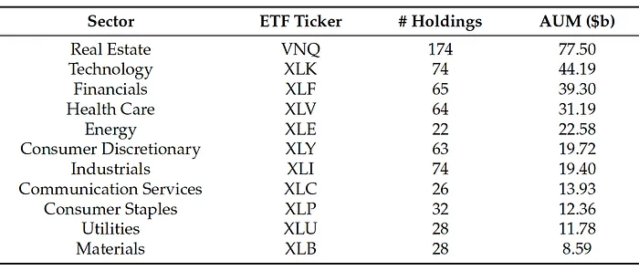

Asset prices are driven by factors of different timescales, ranging from long-term market regimes to short-term fluctuations, and they often exhibit nonstationary behaviors, such as time-varying volatility and trends.
The empirical mode decomposition (EMD) is designed for analyzing nonstationary time series. This adaptive data-driven method decomposes any time series into oscillating components with nonstationary amplitudes and frequencies. For an introduction to this approach, read Multiscale Financial Signal Processing.
Sector ETFs
Here, we focus our study on the multiscale analysis of sector ETF price dynamics.

There are 11 funds representing all the sectors in the U.S. market. Each ETF represents a portfolio of equities within the corresponding sector. The ETFs hold different numbers of stocks, and their assets under management (AUM) range from under U.S.$10 bil to over U.S.$70 bil.
Originally published on openexa.com, Oct 19, 2021. A summary of work first published on medium.com.
The original on medium.com